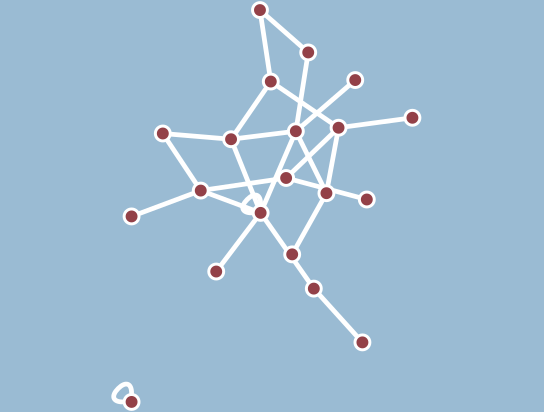
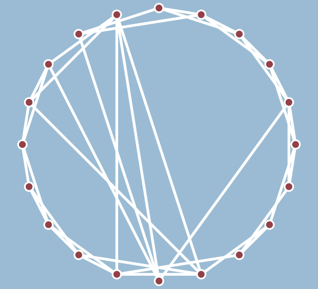
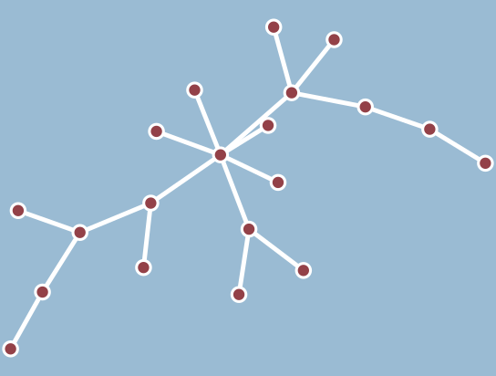

Erdős–Rényi

- 60 nœuds.
- Chaque paire de nœuds a 1 chance sur 10 d'être connectée.
Watts-Strogatz

- 60 nœuds placés sur un cercle.
- Chaque nœud est connecté à ses 3 voisins de chaque côté.
- Chaque connection a une probabilité 0.6 d'être redirigée vers un autre nœud cible.
Barabási–Albert

- 60 nœuds ajoutés 1 par 1.
- Chaque nouveau est connectés à 3 anciens nœuds, choisi avec une probabilité proportionnelle au nombre de connections actuelles.